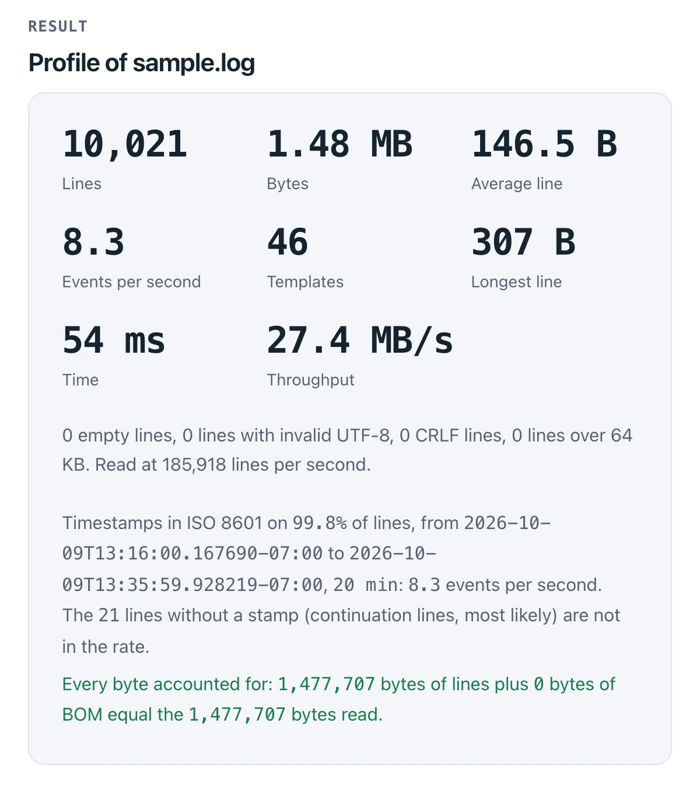

1 Measure, with the profiler
In your browser: give it a log file and it reports the bytes per event, the events per second, the message templates and what a year of it takes to keep.

Every SIEM quote turns on two numbers, bytes per event and events per second. Most of the time both are guessed.
In your browser: give it a log file and it reports the bytes per event, the events per second, the message templates and what a year of it takes to keep.

On iPhone and iPad: type in those two figures, the size in whole bytes, or take one of the 39 measured sizes, for every source you collect from, and get the storage, the cluster and the node count.

Either works alone: the profiler needs no app, and the app needs no sample.
Step 1 · Measure
Give it a sample of the log you plan to collect; 50 to 500 MB is the normal case. It reads the file line by line in a Web Worker, on your machine, and reports what a SIEM is sized on.
Every line is counted, terminator included, and the total reconciled to the byte against the size of the file. The average line is the bytes per event a sizing needs.
Timestamps, addresses, ids and numbers are masked, then Drain groups the lines into the templates behind them, each with its share and its average size. The largest is the first to filter before you pay to keep it.
The timestamps, in any of six common formats, give the rate over the time the sample covers. At your retention and compression that is a day and a year of storage. The profile downloads as JSON, the templates as CSV.
The three largest of the sample's 46 templates, as the profiler shows them. <*> is a word that varies; <ts>, <ip>, <num> and <hex> were masked before clustering.
| Lines | Template | Share | Avg bytes |
|---|---|---|---|
| 1,439 | <ts> <*> nginx[<num>]: <ip> - <*> <*> <*> HTTP/<num>" <num> <num> "-" <*> | 14% | 134 |
| 1,178 | <ts> <*> app[<num>]: INFO <*> method=GET <*> status=<num> <*> | 12% | 142 |
| 1,072 | <ts> <*> app[<num>]: INFO worker <num> <*> job <hex> <*> <*> <*> | 11% | 112 |
Nothing leaves your browser. The profiler is a static page with no analytics and no upload, and its Content Security Policy allows no connection except to this site. Open the Network panel while it runs.
Step 2 · Size
Capacity planning is arithmetic done under pressure, usually in a meeting. The app does the arithmetic for the whole deployment, source by source, so the conversation can be about the answer.
Build a list of the sources you will actually collect from, each with its rate and its event size, measured by you or taken from the 39 built in. Set compression, indexing and retention, and get the storage that list needs, the cluster capacity and the number of data nodes to hold it. The List and Storage tabs.
Move between message rates and volumes — per second, hour, day, month or year; bits and bytes; decimal and binary. The unit confusion that causes sizing errors, removed. Type the rate and the event size you measured, and + adds them to the list.
Put a number in human terms. A gram of DNA holds over eight million Blu-rays; a petabyte is so many years of 4K video. Useful for the slide, and for intuition.
The average event size is what sizing lives or dies on, and it varies by more than a factor of ten between sources. The app ships measured averages for the sources you cannot sample, and the profiler measures the ones you can.
All 39 measured sizes, with the typical rates and a page each →
| Source | Category | Avg bytes |
|---|---|---|
| Netskope Alert | Proxy | 2,591 |
| Windows Event Log | Windows servers | 2,413 |
| Apache Kafka | Application | 2,000 |
| Oracle Database | Database | 1,030 |
| Stellar Cyber Interflow | SIEM | 1,000 |
| Cisco ISE | Servers | 970 |
| Cisco Netflow v9 | Network flows | 814 |
| Windows Server 2016 | Windows servers | 800 |
| Crowdstrike | Managed endpoint | 540 |
| Active Directory | AD/Domain controller | 300 |
| Apache Hadoop | Distributed system | 192 |
| Android | Mobile OS | 138 |
The whole catalogue, with a page per source, is at logcaliper.app/sources, free to take under CC BY. Collecting from something that is not in the list? tell me and it can go in the next release.
Logcaliper is free because it is useful to people, and that is the whole return. Engineers have put the app to work in their own write-ups:
IBM Security, Think 2018, Adam Frank and Robert McGinley. Logcaliper is on the slide that estimates events per second, listed as an estimation tool with its App Store link. PDF, 6 MB.
Splunk's own blog, May 2016, Vishal Nakra. Points to Logcaliper for sample event sizes when working out a licence from data samples.
A source you collect from that is not in the catalogue, a timestamp format the profiler does not read, a number that does not match what you measure, a mode the app should have. All of it is welcome.